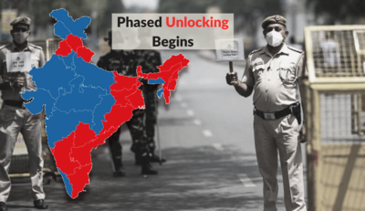
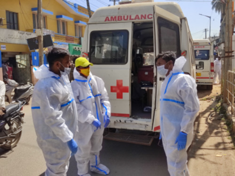
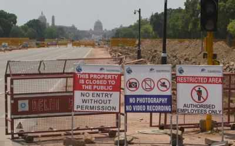

Covid curbs eased in some states, extended in others: What's open and where
The national capital has allowed malls and markets to open on an odd-even basis. In Mumbai, local trains will run for
essential services. In Haryana and UP, curbs have been relaxed. However, several states in the southern and eastern
parts of the country have extended the lockdown as they are still reporting a high number of cases.
7 June 2021

J&K: Banihal-Qazigund tunnel likely to be operational in coming weeks
Along the 270-km Jammu-Srinagar national highway built at a cost of Rs 2,100 crore is going through the testing and commissioning
process and is likely to become operational in coming weeks, officials of the construction company said on Sunday.
The work on the 8.5-km-long tunnel started in June 2011 and, on completion, it would reduce the road distance between Banihal in Jammu
and Qazigund in south Kashmir by 16 km.
7 June 2021

Covid surge in rural Karnataka triggers stigma, suicides
Bengaluru, 46, a small farmer, had been living happily with his family in Mookahalli, Chamarajanagar district,
about 180km from Bengaluru, till recently.He was quite popular in the village as he delivered milk to several households every day.
But his life turned upside down after he was infected with Covid-19 on May 24. His family members, including daughters Jyothi, 14, and Geetha, 12,
were allegedly ostracised by the villagers.
7 June 2021
Saying China wrecked many nations with virus, Trump doubles down on $10 trillion 'reparation' from Beijing
WASHINGTON: Former US President Donald returned to the national centerstage on Saturday night with his first long political
address after his election defeat, telling his Republican faithful gathered for a convention in North Carolina that "our country
is being destroyed before our very own eyes." In speech that was trademark Trump, saying the current leadership is bowing down to China,
and the country is being demeaned.
7 June 2021

Kerala adds 14,672 new Covid-19 cases, 227 fatalities
THIRUVANANTHAPURAM: registered 14,672 fresh coronavirus cases and 227 related deaths on Sunday taking the total caseload in the state
to 26.03 lakh and the toll to 9,946. Health Minister noted that 1,02,792 samples were tested in the last 24 hours and the test positivity
rate was 14.27 per cent. Till now 2.05 crore samples have been tested. Among the districts recorded the highest number of cases today at 2,126.
7 June 2021

Central Vista area to get 1,753 new trees as transplant, revamp to raise green cover
NEW DELHI: Under the redevelopment of Avenue which comprises Rajpath, leading from the Rashtrapati Bhavan to India Gate, 48 trees are
proposed to be transplanted and of them, permission has been granted for 25, including 22 Jamun trees, till date, sources said. However,
no old tree planted as per Lutyen's original plan, including Jamun trees, is proposed to be transplanted, they said.
7 June 2021